GolGana
Plataforma interactiva de pronósticos deportivos (quiniela) para el Mundial 2026.
Tecnologías


GolGana es una plataforma web interactiva diseñada para vivir la emoción del Mundial 2026 como nunca antes, con miras a expandirse a futuros torneos de selecciones. Esta aplicación permite a los fanáticos registrarse, hacer sus predicciones de los partidos y competir con amigos en ligas privadas mediante un sistema de puntuación automatizado basado en el nivel de acierto. Construida con React y respaldada por Firestore, la plataforma ofrece una experiencia rápida, fluida y con estadísticas en tiempo real. Además, integra un panel de administración completo y seguro para gestionar fases de grupos, partidos, ligas, usuarios y establecer fechas límite para los pronósticos. Es una solución escalable que combina pasión deportiva con tecnología moderna.

CETPRO - Sistema de Matrícula
Sistema de gestión académica y matriculación para Centros Educativos.
Tecnologías


Sistema integral de gestión académica y matriculación diseñado específicamente para Centros de Educación Técnico Productiva (CETPRO). La plataforma permite administrar el acceso mediante roles (docentes, estudiantes y administradores). Los estudiantes pueden verificar su estado de matrícula y consultar sus notas, mientras que los docentes pueden gestionar horarios y calificaciones. Construido con React y apoyado en Supabase, ofrece una experiencia de usuario segura, eficiente y perfectamente adaptada a las necesidades administrativas de la institución.

GredaCJ
Software de seguimiento y control de clientes
Tecnologías
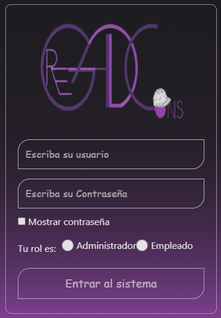
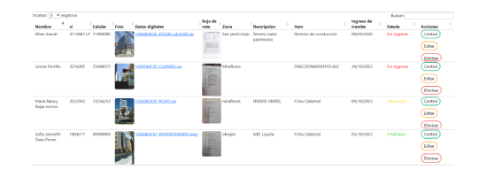
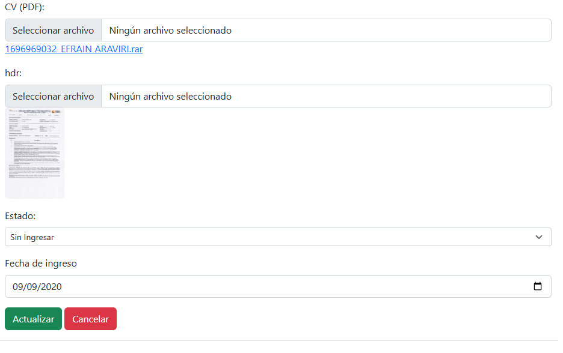
El proyecto busca desarrollar un software especializado que centralice y optimice esta información. La nueva plataforma permitirá una búsqueda rápida y organizada de registros, mejorando la productividad interna y la atención al cliente. Al eliminar procesos manuales, se reducirán errores y se aprovecharán mejor los recursos. Esta solución no solo moderniza las operaciones de GREDACJ, sino que también fortalece su competitividad en el sector construcción, gracias a un entorno laboral más ágil y tecnologías innovadoras.
Fruttiplay
Juego para niños de 6 a 10 años de operaciones aritmeticas
Tecnologías
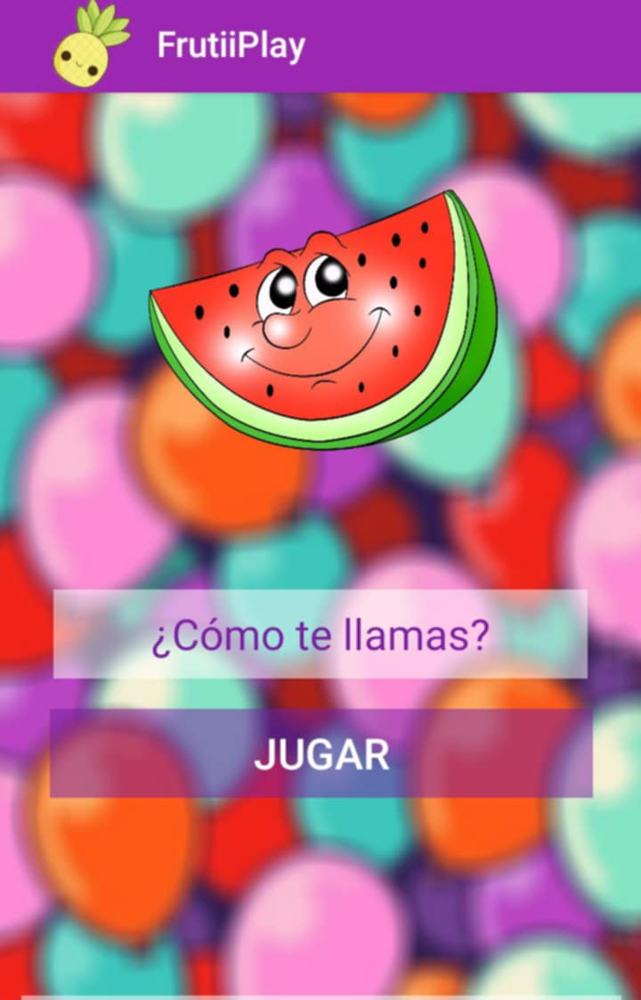
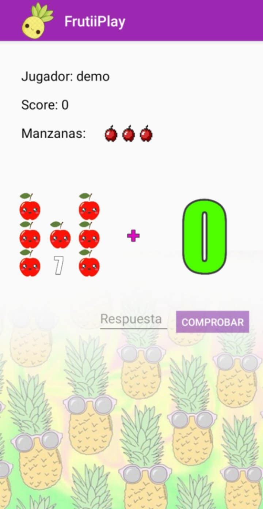
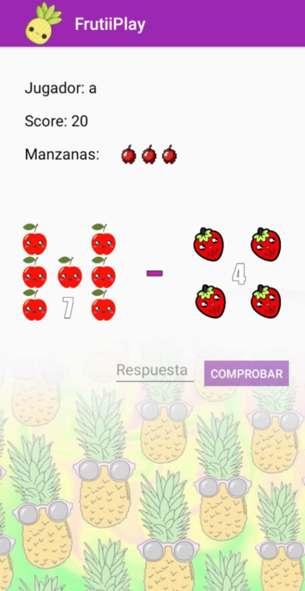
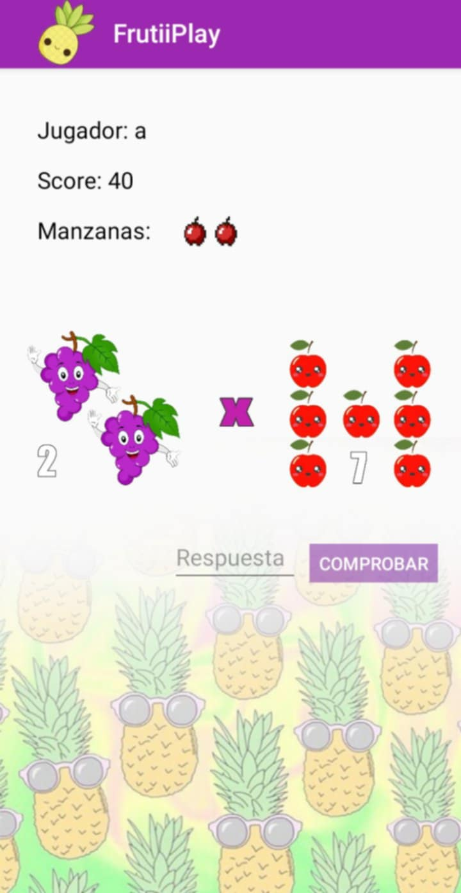
Este juego de operaciones aritméticas está diseñado para niños de 6 a 10 años, combinando aprendizaje y entretenimiento de forma intuitiva y didáctica. El juego refuerza conceptos básicos como suma, resta, multiplicación mediante dinámicas coloridas, animaciones amigables y retroalimentación inmediata. Cada nivel motiva a resolver desafíos matemáticos de forma divertida. Su diseño accesible permite que los niños lo usen sin asistencia constante, convirtiéndolo en una herramienta ideal tanto para el hogar como para entornos educativos.
Asfi Educa
Aplicación para el calculo de presupuesto familiar y calculadora financiera
Tecnologías
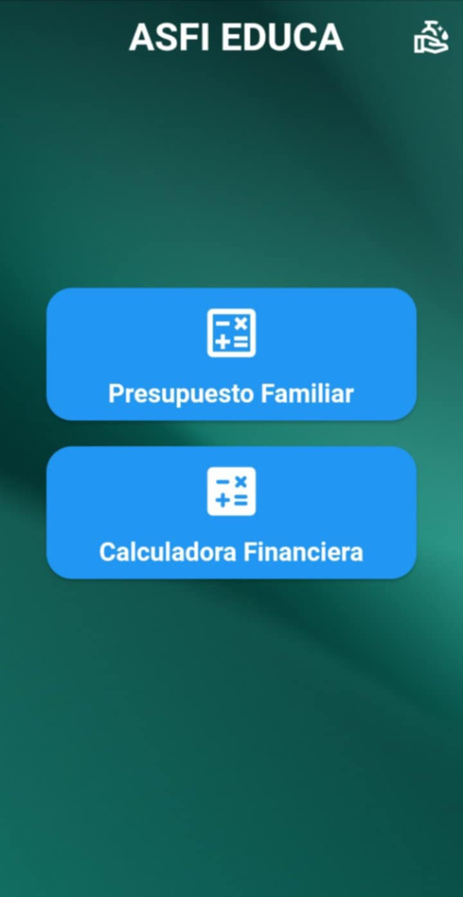
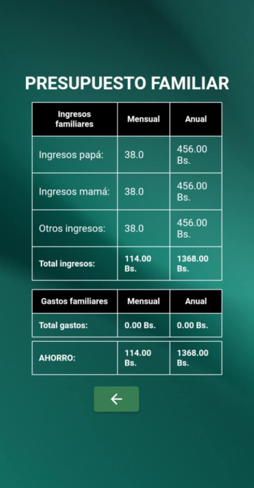
Esta aplicación ayuda a gestionar sus finanzas de forma sencilla y eficiente. Permite calcular el presupuesto familiar mensual, registrar ingresos y gastos, y realizar operaciones financieras básicas. Su interfaz intuitiva facilita el ingreso de datos por parte del usuario, permitiendo un seguimiento claro de su economía.La app genera una tabla detallada con todos los datos introducidos, ofreciendo una visión completa del estado financiero. Es una herramienta ideal para tomar decisiones económicas informadas y fomentar una mejor organización del dinero en el hogar.
Sistema de consultas (CRUD)
Sistema de consultas de datos de procesos Judiciales
Tecnologías
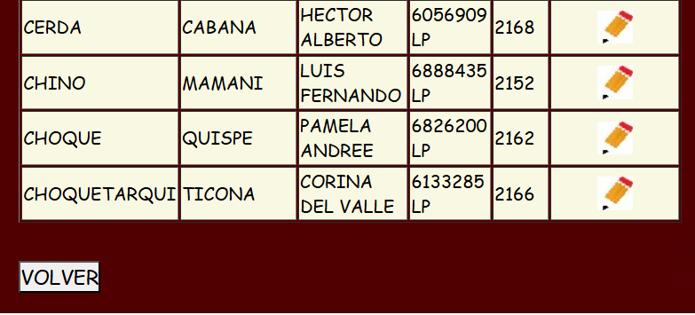
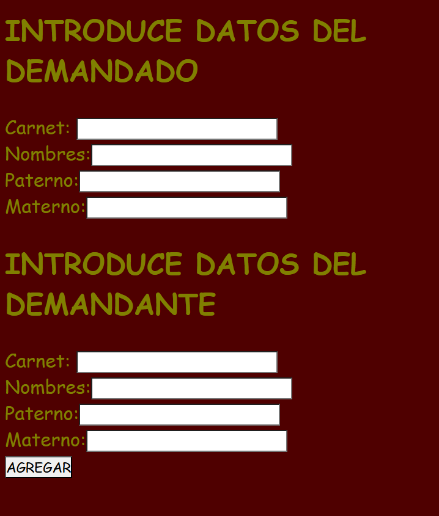
Este sistema CRUD está orientado al trabajo de abogados, permitiendo gestionar eficientemente información legal. Ofrece funcionalidades para crear, leer, actualizar y eliminar datos relacionados con clientes, casos, documentos legales. Su diseño está enfocado en facilitar el acceso rápido a la información, con filtros y búsquedas personalizadas. Gracias a su interfaz intuitiva, los usuarios pueden consultar expedientes o historial de casos de manera ágil y ordenada. Es una herramienta ideal para mantener la organización y el control de procesos legales.
Portafolio personal
Todos los proyectos realizados y terminados
Tecnologías
Mi portafolio reúne una colección de proyectos desarrollados con enfoque práctico y funcional, incluyendo aplicaciones móviles, sistemas CRUD y herramientas educativas. Cada sistema cuenta con un breve resumen que describe su propósito. Desde juegos didácticos hasta apps financieras, el portafolio refleja mi evolución como desarrollador y mi compromiso con soluciones útiles e intuitivas. Está diseñado para mostrar no solo mis habilidades técnicas, sino también mi capacidad para resolver problemas reales mediante software.